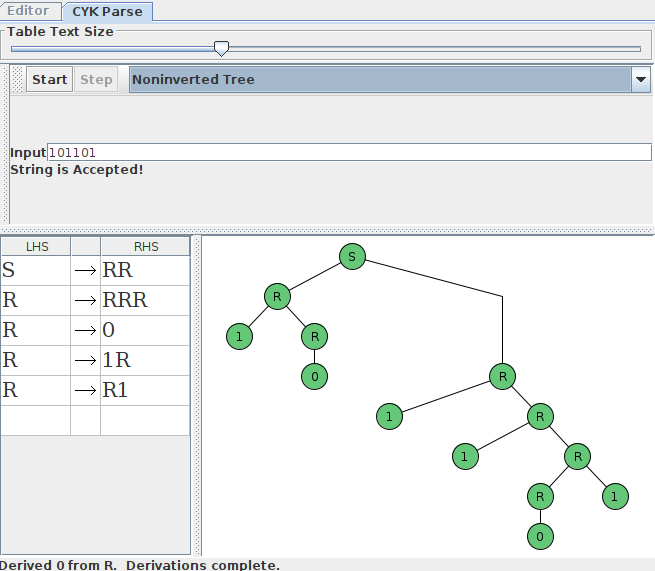

Homework 5: Context Free Grammars (13 Points)
Chris Tralie
Overview / Logistics
The purpose of this problem set is to get you experience designing and reasoning about context free grammars.
Problem 1 (4 Points)
Consider the grammar with variables V = {S, R}, terminals Σ = {0, 1} and the following rules (where S is the start variable)
- S → RR
- R → RRR
- R → 0
- R → 1R
- R → R1
- (2 points)
Which strings can be generated with 4 or fewer substitutions?
- (2 Points)
For arbitrary a, b, c ≥ 0, describe a derivation (sequence of rules repeating in terms of a, b, and c) that lead to the terminal string 1a01b01c. For instance, you could write "repeat rule X a times" as part of it.
JFLAP
To help you out, you can take advantage of JFLAP's built-in CYK parser which finds a valid derivation if it exists. Open up the Grammar program in JFLAP, then write in the rules for the grammar. Then, go to the menu Input → CYK Parse. You can put in a string here. If the string is in the language, JFLAP will find a derivation using the CYK algorithm, which you can display either as a derivation table
or as a parse tree, which you can go through step by step
If the string you input is not in the language generated by the CFG, then it will say it was rejected.
Problem 2 (3 Points)
Devise a context free grammar that generates the language
\[ L_2 = \{a^ib^jc^k | i, j, k \geq 0 \text{ and if } i = 1, \text{ then } j = k \} \]
Problem 3 (3 Points)
Prove that it's impossible to recognize the above language L2 with a DFA.
Hint: Believe it or not, L2 actually satisfies the regular pumping lemma! But this doesn't imply it's regular. Recall that being regular implies the pumping lemma, but the converse is not necessarily true; that is, a language that satisfies the pumping lemma is not necessarily regular. In fact, this is a counter-example to the converse of the pumping lemma. Instead, assume L2 is regular and use other properties of regular languages to transform it into something else that's nonregular, which would be a contradiction.
Problem 4 (3 Points)
We know that the union of two CFGs is a CFG, and that CFG generated languages are a superset of regular languages. Show two languages which are each nonregular but which can be each generated with CFGs, and whose union is regular.
Hint: If you're stuck, try consider languages of strings with a bunch of 0s followed by a bunch of 1s